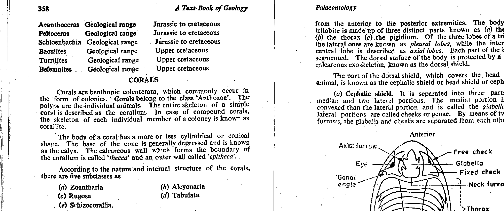
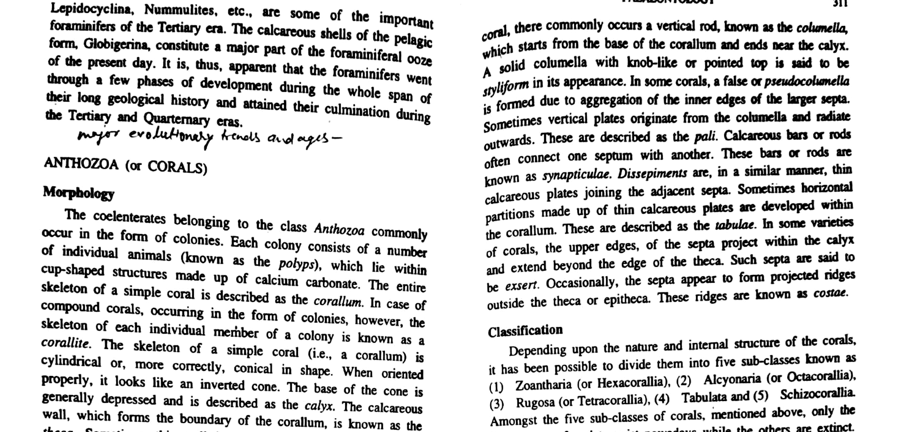

The Order Rugosa (Milne-Edwards & Haime, 1850), universally referred to in classical invertebrate paleontology as Tetracoralla (Haeckel, 1866), constitutes an extinct, major group of solitary and colonial anthozoan cnidarians that flourished throughout the Paleozoic marine realm. The name Rugosa derives from the Latin ruga (wrinkle), referring directly to the prominent concentric growth ridges and coarse wrinkles that ornament the outer skeletal wall (epitheca).
The classic morphological archetype of the solitary rugosan is a curved, conical or ceratoid skeletal cup, popularly designated as the "horn coral" due to its uncanny resemblance to a bovine or ram horn. The animal inhabited the concave upper depression of this skeleton, termed the calice, while secreting a continuous basal and peripheral framework of calcium carbonate.

The defining taxonomic criterion separating Tetracoralla (Rugosa) from Hexacorallia (Scleractinia) lies in the ontogenetic sequence of septal insertion. While modern scleractinians insert septa in radial cycles of six ($6 \to 12 \to 24 \dots$), rugose corals insert their adult septa (metasepta) in strictly four quadrants, imparting a conspicuous bilateral symmetry to the adult corallum.

The classical insertion sequence established by A. Kunth (1869) proceeds as follows:
Rugose corals were exclusively marine, benthic, suspension-feeding organisms that flourished on shallow Paleozoic carbonate platforms, patch reefs, and level-bottom muddy/silty substrates from the Middle Ordovician (Darriwilian) to the Late Permian (Changhsingian).
A fundamental distinction between Paleozoic Rugosa and post-Paleozoic Scleractinia is their primary skeletal mineralogy:
At the end of the Permian Period (~251.9 Ma), the massive flood basalt eruptions of the Siberian Traps induced severe ocean acidification, hypercapnia, marine anoxia, and global warming. Because rugose corals possessed thick calcitic skeletons, lacked high physiological buffering against elevated oceanic $p\text{CO}_2$, and relied on vulnerable benthic carbonate ecosystems, the entire order Rugosa was completely annihilated. Not a single species of Rugosa survived into the Triassic Period. The scleractinian corals that appeared in the Middle Triassic (Anisian) evolved independently from non-skeletal actiniarian sea anemone ancestors, exhibiting a 14-million-year "reef gap" in the Early Triassic.
Scleractinia (also designated as Hexacorallia) are the modern stony reef-building corals that first appeared in the Middle Triassic (~240 Ma) and persist to the present day. They possess an aragonitic skeleton with septa inserted in cycles of six (hexameral radial symmetry), completely lacking the distinctive four-fold septal insertion, cardinal fossula, and coarse wrinkled epithecal horn morphology characteristic of Paleozoic Rugosa.
Tetracoralla is the classic paleontological synonym for the Order Rugosa (Milne-Edwards & Haime, 1850). The term refers directly to the four cardinal quadrants within which all adult metasepta are inserted. The solitary representatives possess a diagnostic curved, conical morphology resembling a horn (hence the universal vernacular name "horn corals") enclosed by a wrinkled outer wall (epitheca). This is the exact textbook definition provided by G.B. Mahapatra (p. 187, 358) and P.K. Mukherjee (p. 170).
Octocoralla (Alcyonaria) constitutes an entirely separate anthozoan subclass characterized by polyps possessing exactly eight pinnate (feather-like) tentacles and eight complete mesenteries. Octocorals include sea pens (Pennatulacea), sea fans (Gorgonacea), and soft corals (Alcyonacea). With rare exceptions (e.g., the organ-pipe coral Tubipora), they secrete microscopic internal calcitic spicules (sclerites) or gorgonin axes rather than solitary conical horn-shaped skeletons with rugose walls.
This choice is biologically and stratigraphically impossible. Hexacorallia (6-fold), Tetracoralla (4-fold), and Octocoralla (8-fold) are distinct, mutually exclusive taxonomic divisions defined by entirely different symmetries, skeletal mineralogies, and geological distributions.
| Taxonomic Group | Septal Symmetry & Insertion | Skeletal Mineralogy | Internal Structures | Growth Habit | Stratigraphic Range |
|---|---|---|---|---|---|
| Rugosa (Tetracoralla) | Tetrameral (4 quadrants); bilateral symmetry; metasepta added at 4 loci | Calcite (high-Mg, stable) | Tabulae, dissepiments, columella, cardinal fossula | Solitary ("horn corals") and Compound/Colonial | Middle Ordovician – Late Permian (Extinct at P-Tr) |
| Scleractinia (Hexacorallia) | Hexameral (cycles of 6); radial symmetry; septa inserted in concentric cycles | Aragonite (metastable) | Dissepiments, columella, synapticulae; fossula absent | Predominantly colonial (reef-builders) & solitary | Middle Triassic – Recent (Dominant today) |
| Tabulata | Radial; septa poorly developed (spines, ridges) or absent; 12-fold when present | Calcite (low- to high-Mg) | Prominent horizontal tabulae; mural pores; no dissepiments | Exclusively colonial (honeycomb, chain, tube colonies) | Early Ordovician – Late Permian (Extinct at P-Tr) |
| Octocoralla (Alcyonaria) | Eight-fold (octameral); septa absent or represented by 8 internal ridges | Organic gorgonin and/or isolated calcitic sclerites | Spicular meshwork or horny central axis | Colonial (soft corals, sea fans, sea pens) | Ordovician – Recent |
A transverse thin section of a solitary Carboniferous rugose coral displays a total of 42 major septa (metasepta + protosepta). If the cardinal septum and counter septum are uniquely identified along the bilateral plane, and 10 metasepta are counted in each of the two cardinal quadrants, calculate the number of metasepta present in each of the two counter quadrants.
Explain why solitary rugose corals from the Devonian Hamilton Group commonly preserve fibrous crystalline trabecular microstructures, whereas Middle Triassic scleractinian corals from equivalent shallow marine limestones are frequently preserved as sparry calcite-filled molds.
Under petrographic inspection of an unknown Paleozoic coral thin section, a student observes: (a) radial septa displaying a feather-like pinnate convergence toward an open slot; (b) a gap devoid of septa on one side of the lumen; and (c) absence of cyclical insertion in multiples of six. Identify the structure and determine the coral order.
In a famous 1963 study, John Wells counted the microscopic epithecal daily growth ridges between major annual growth annulations on Middle Devonian horn corals (e.g., Heliophyllum halli), obtaining an average of 400 daily bands per annual cycle. Calculate the length of a Devonian solar day in hours, assuming Earth's orbital period (year length) has remained constant at $3.156 \times 10^7\text{ seconds}$ (365.25 modern days).
The Devonian fossil Calceola sandalina is a specialized rugose coral possessing a flat semicircular side, a pointed apex, and a hinged lid (operculum). Describe its life mode and explain how its morphology adapted it to high-energy muddy benthic substrates.
Compare the colonial architecture of the Carboniferous compound rugosan Lithostrotion with a solitary horn coral like Zaphrentis. Specify the terms for colonial corals where corallites are: (a) separated by distinct cylindrical walls; (b) polygonal and in contact; and (c) confluent with confluent septa.
In a longitudinal thin section cut parallel to the growth axis of a rugose coral, two distinct structural zones are observed: an outer peripheral zone and an inner axial zone. Define these zones and explain their respective structural functions.
Following the total extinction of Rugosa and Tabulata at the Permian-Triassic boundary (251.9 Ma), no biogenic coral reefs are found in the fossil record during the Griesbachian, Dienerian, Smithian, and Spathian stages of the Early Triassic (~5 million years). Explain why scleractinians did not immediately take over rugose reef niches in the Early Triassic.